Guía de uso de marca: logotipos, colores, tipografía, elementos gráficos y aplicaciones. Síguela para que todo lo que publique Norinko se vea como una sola marca.
Taller automotriz en Ciudad Juárez, Chihuahua, especializado en restaurar, reparar y personalizar autos clásicos y modernos. Todo bajo un mismo techo, con acabados de primera y garantía por escrito.
Trabajo que se nota y que dura: cotización clara, avances en tiempo real y un solo taller responsable de todo el proyecto.
Apasionada, experta, directa y cercana. Habla como un amigo que sabe de carros: sin rodeos, con orgullo por el trabajo bien hecho.
01 Restauración de autos clásicos
02 Pintura y carrocería
03 Tapicería
04 Iluminación automotriz
05 Accesorios
06 Refacciones
07 Quemacocos: venta, adaptación y reparación
08 Suspensiones
La tipografía original de la marca en rojo, blanco y amarillo, con brillo y contorno. Solo dice NORINKO PERFORMANCE. Se usa en perfil, portadas, sitio web, lonas y video.
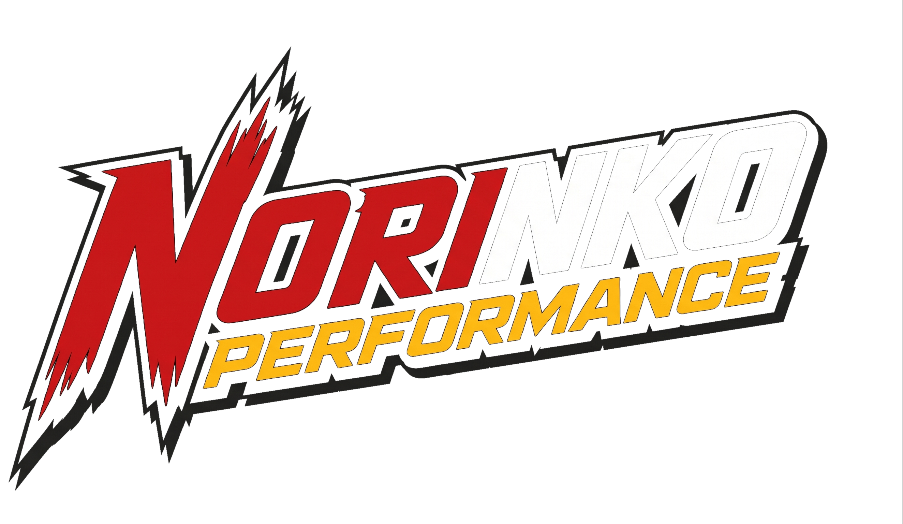
Mismo logotipo en colores planos, sin brillos. Para vinil, rotulación, bordado, serigrafía y sellos, donde no se pueden imprimir degradados.
Un solo color (blanco, negro o rojo) para grabado, sellos, marca de agua en fotos y videos, y fondos con mucho detalle.
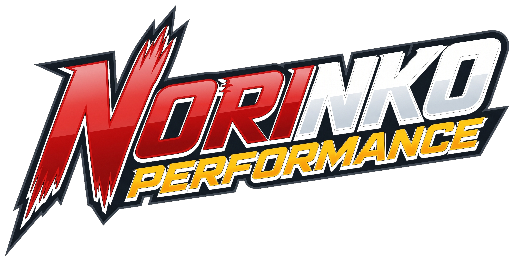
Fondo carbón u oscuro (preferida)
Fondo blanco o claro
Fondo rojo Norinko
Monocromo blanco: sobre fotos o grabado
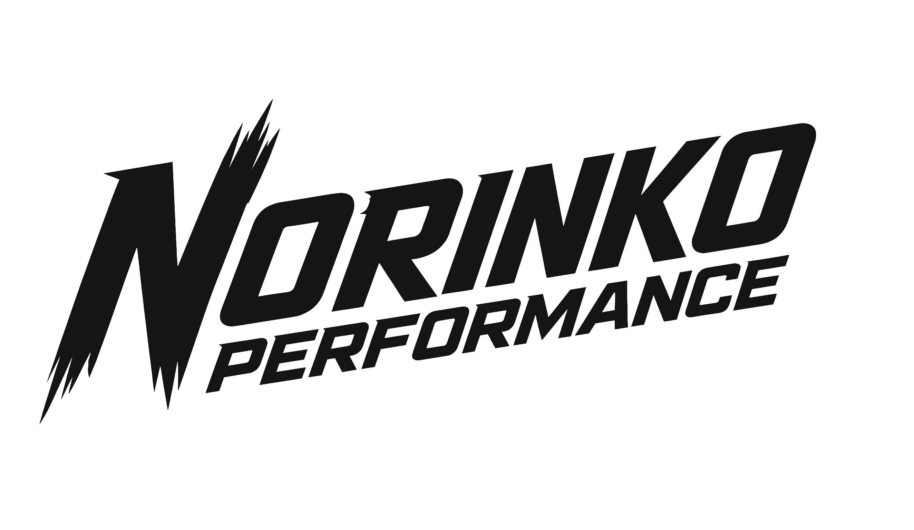
Monocromo carbón: sobre amarillo y sellos
Sobre fotografía: monocromo blanco
Deja libre alrededor del logotipo un espacio igual a la altura de la palabra "PERFORMANCE". Nada de texto, bordes ni fotos dentro de esa zona.
Logotipo: 35 mm / 180 px de ancho · Versión plana y monocromo: 30 mm / 160 px. Siempre se usa el logotipo completo; nunca letras sueltas.
No deformar
No cambiar colores
No rotar
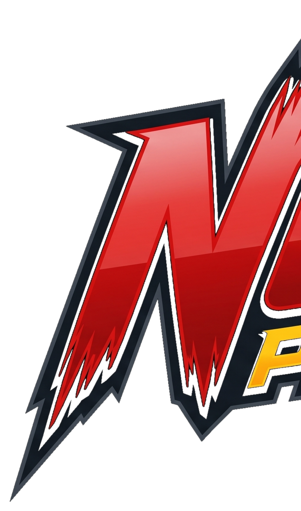
No usar letras sueltas (como la "N" sola)
No usar fondos sin contraste
No agregar efectos ni sombras
Combinaciones de texto correctas: blanco sobre rojo · carbón sobre amarillo · carbón o rojo sobre blanco · blanco o amarillo sobre carbón. El amarillo sobre rojo solo se usa en títulos grandes (más de 24 pt), nunca en texto pequeño.
ABCDEFGHIJKLMNÑOPQRSTUVWXYZ
0123456789 · ¡¿$%&?!
Siempre en MAYÚSCULAS e itálica. Pesos: Black (900) para titulares, ExtraBold (800) para botones y etiquetas. Gratuita en Google Fonts.
Aa Bb Cc Dd Ee Ff Gg Hh Ii Jj Kk Ll Mm Nn Ññ Oo Pp Qq Rr Ss Tt Uu Vv Ww Xx Yy Zz
Para párrafos, descripciones, cotizaciones y todo texto largo. Pesos: Regular (400), Medium (500) y Bold (700). Gratuita en Google Fonts.
Alternativas si no están instaladas: Arial Black Italic (títulos) y Arial (texto).
Rojo, amarillo y carbón (o blanco sobre oscuro), inclinadas 30°. Acompañan títulos y separan secciones.
Botones y etiquetas en paralelogramo, con esquinas cortadas a 14°, con el mismo ángulo del logotipo.
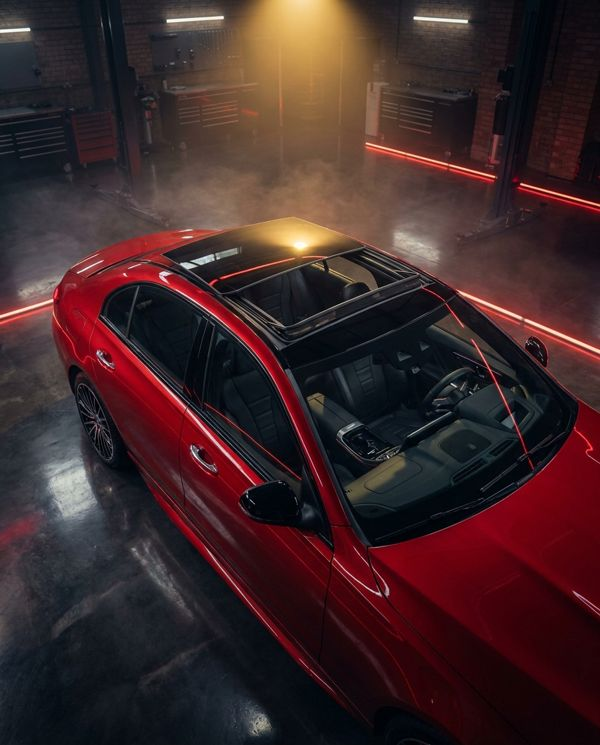
Ambientes oscuros, reflejos, luz roja y amarilla. Siempre fotos reales del taller y de proyectos terminados, con buena luz y sin filtros exagerados.
"Tu carro, a otro nivel." · "Respetamos la historia. Mejoramos todo lo demás." · "Cielo abierto, sin filtraciones." · "Cotiza por WhatsApp: te contestamos hoy."
Promesas vacías ("el mejor del mundo"), tecnicismos sin explicar, precios sin cotizar, groserías o descalificar a otros talleres.
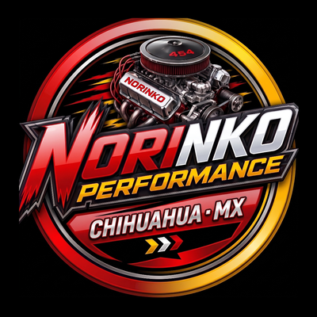
Foto de perfil (todas las redes)
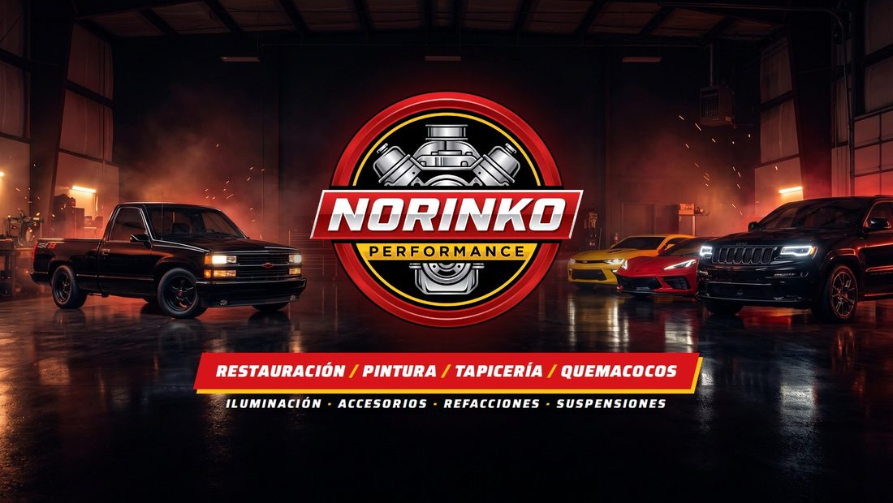
Portada de Facebook / YouTube
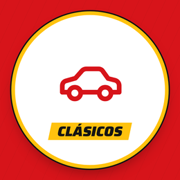
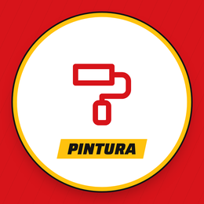
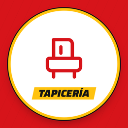
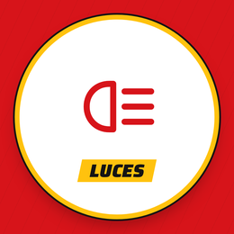
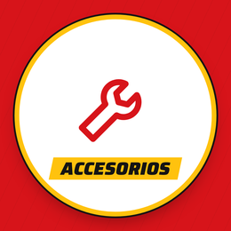
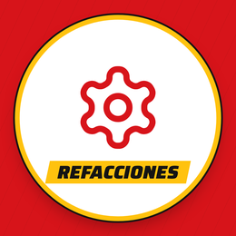
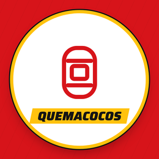
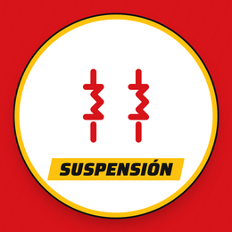
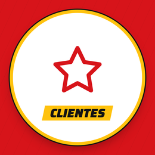
Portadas de Historias Destacadas de Instagram
WhatsApp 656 127 8916
norinko.cuumarketing.com
@norinko_performance · Cd. Juárez, Chih.
Tarjeta de presentación 9 × 5 cm
Rótulo de fachada / lona
Lona promocional por servicio
Playera / uniforme (frente: logotipo en el pecho; espalda: logotipo grande)
Stickers para autos entregados